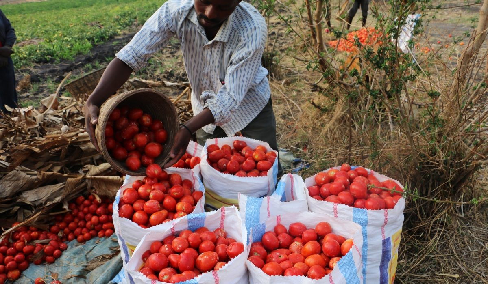

Good morning, Admin
Welcome to the FreshLink Operations Workspace
Use this workspace to register farmers, capture harvest forecasts, and coordinate tomato harvest planning before losses happen.
Today Friday, 3 July 2026

Today's Coordination Focus
- Register new farmers joining the Kamonyi District network
- Capture expected harvest quantities for the coming week
- Review forecasts that still need transport or storage
- Keep farmer records organized and up to date
Overview
Updated a few minutes agoRegistered Farmers
128
+6 this week
Harvest Forecasts Submitted
42
+9 this week
Forecasts Needing Transport
17
Coordinate with truck providers
Forecasts Needing Storage
11
Coordinate with cold hubs
Recent Farmer Registrations
View all farmers →| Farmer Name | Sector | Village | Phone Number | Status |
|---|---|---|---|---|
| Jean Baptiste Nzeyimana | Nyarubaka | Kavumu | +250 788 221 340 | Active |
| Alice Uwamahoro | Rukoma | Gahogo | +250 722 118 065 | New |
| Emmanuel Habimana | Runda | Nyagisozi | +250 788 904 512 | Active |
| Claudine Mukamana | Nyamiyaga | Kabuye | +250 733 552 871 | Pending Review |
Recent Harvest Forecasts
View all forecasts →| Farmer Name | Harvest Date | Quantity | Transport Needed | Storage Needed |
|---|---|---|---|---|
| Jean Baptiste Nzeyimana | 10 Jul 2026 | 420 kg | Yes | No |
| Alice Uwamahoro | 12 Jul 2026 | 310 kg | Yes | Yes |
| Emmanuel Habimana | 14 Jul 2026 | 580 kg | No | Yes |
| Claudine Mukamana | 16 Jul 2026 | 245 kg | Yes | No |